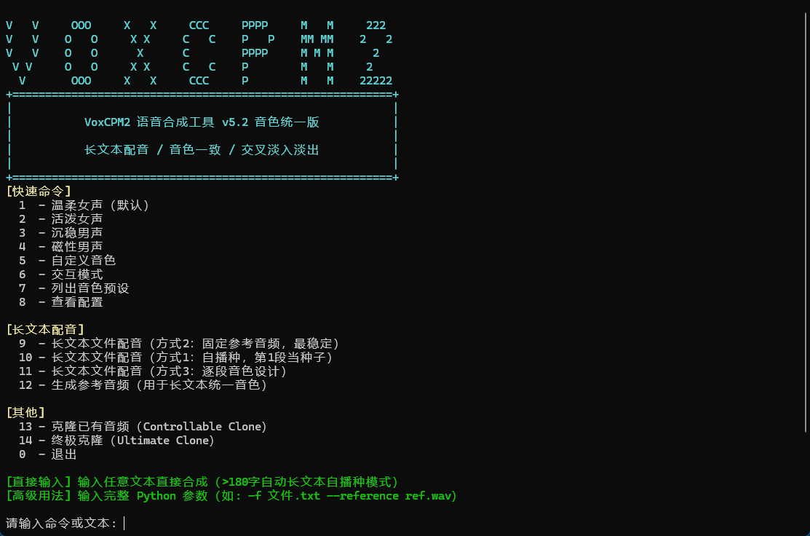
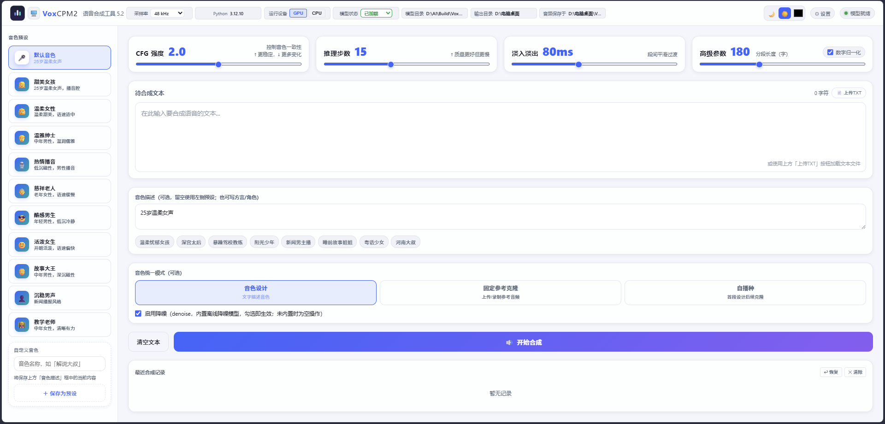
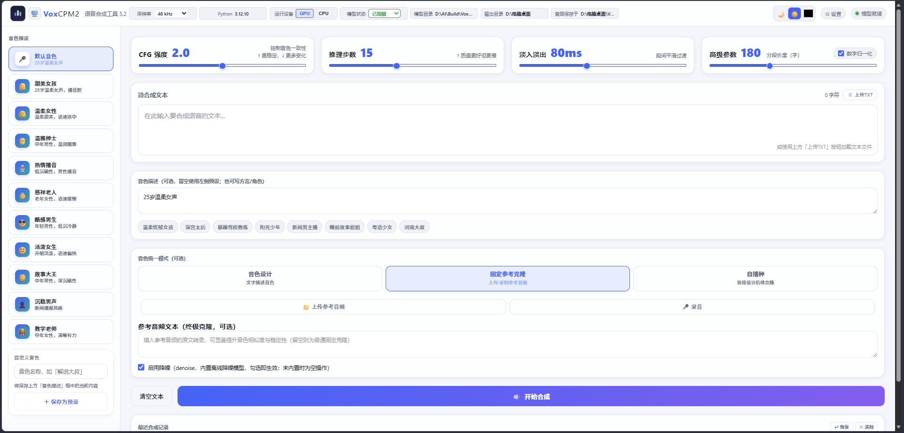
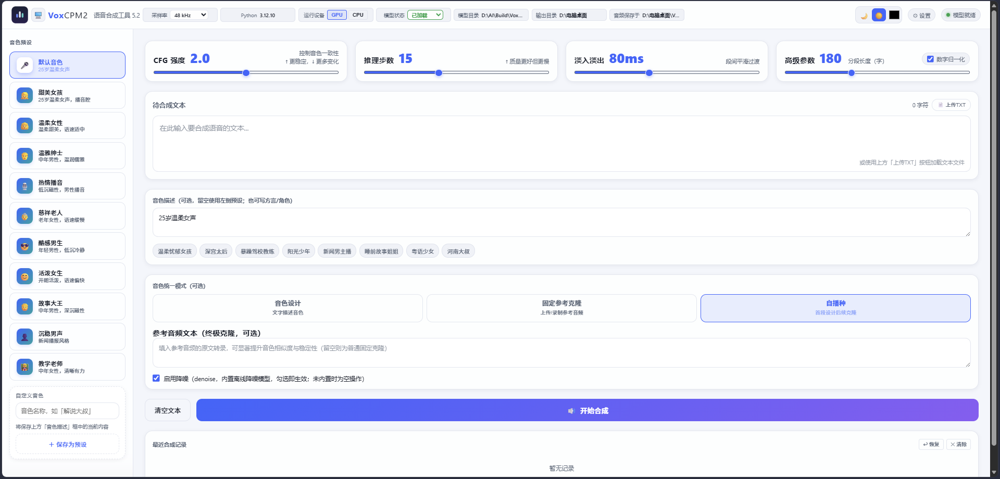
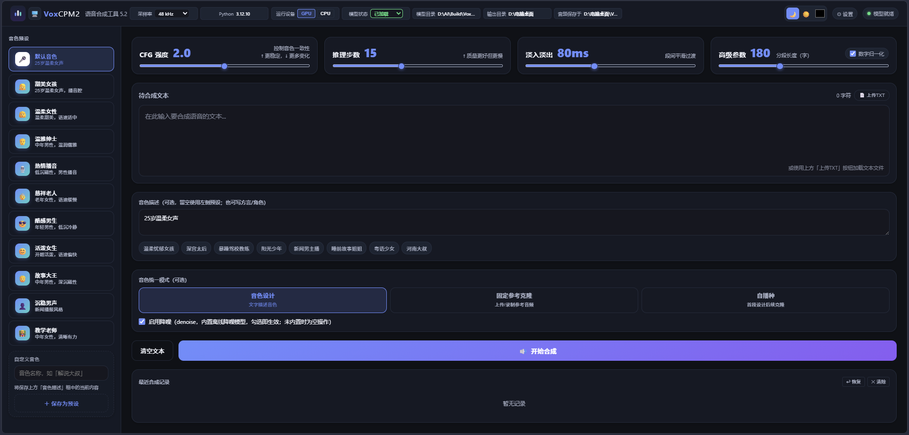

从下列地址下载对应安装包，按需选择：
| 类型 | 下载地址 | 文件 | 大小 |
|---|---|---|---|
| 完整版 | https://www.alipan.com/s/jraDcmeo1y6（提取码 i9u7） |
VoxCPM2_TTS_v5.3_Setup.exe + 3 个 .bin |
约 5.24 GB |
| 无模型版 | https://github.com/dandelion80231/VoxCPM2Dist/releases/tag/v5.3.1 | VoxCPM2_TTS_v5.3_nomodel_Setup.exe |
约 1.56 GB |
.exe 即可，安装程序会自动读取 .bin 分卷。.exe，无需额外文件，双击即安装。C:\Program Files\VoxCPM2 TTS）。安装完成后，桌面会出现两个快捷方式：
安装完成后首次启动，程序会提示「模型缺失」。请按以下任一方式获取模型：
text_norm_cn.py，零依赖、无需下载），无模型版安装包已自带。本节「模型」仅指 VoxCPM2 主模型（必备）与可选的 ZipEnhancer 降噪模型。下载模型.bat。安装目录\model\openbmb\VoxCPM2\。如果你有更快的多线程下载器（如 IDM、aria2、迅雷、Motrix 等），可手动从以下公开源拉取后放入指定目录，往往比脚本内置下载更快：
| 来源 | 地址 |
|---|---|
| HuggingFace | https://huggingface.co/openbmb/VoxCPM2 |
| ModelScope | https://modelscope.cn/models/OpenBMB/VoxCPM2 |
| 夸克网盘（国内直连） | https://pan.quark.cn/s/42994c0df601 |
放置位置：将下载到的文件放入
安装目录\model\openbmb\VoxCPM2\
必需文件包括：model.safetensors、audiovae.pth、config.json、tokenizer*、tokenization_voxcpm2.py。
下载模型.bat，直接重启程序即可识别模型。无模型版安装包不含离线降噪模型（打包时整个 app/models/ 目录被排除，主模型在 app/model/、降噪模型在 app/models/zipenhancer/，二者都在排除范围）。但无需手动处理：运行「下载模型.bat」会自动把主模型与降噪模型一并下载到位（降噪约 18MB，支持断点续传）。
models\zipenhancer\configuration.json 不存在会自动降级，降噪变为空操作，语音照常生成。models\zipenhancer\ 整个文件夹，复制到无模型版安装目录下同名位置 安装目录\models\zipenhancer\。iic/speech_zipenhancer_ans_multiloss_16k_base（约 18MB）：
| 来源 | 地址 |
|---|---|
| ModelScope | https://modelscope.cn/models/iic/speech_zipenhancer_ans_multiloss_16k_base |
modelscope download --model iic/speech_zipenhancer_ans_multiloss_16k_base --local-dir 安装目录\models\zipenhancer；或用 ModelScope 网页 / 多线程下载器把仓库文件取到本地后放入 安装目录\models\zipenhancer\。
双击桌面的交互菜单快捷方式，会打开 PowerShell 图形菜单：

1温柔女声直接合成6进入交互模式9长文本固定参考配音10长文本自播种配音直接输入任意文本即可合成（>180 字自动走自播种长文本模式）。
双击桌面的网页界面快捷方式，浏览器会自动打开 http://127.0.0.1:18978（若端口被占用会自动顺延）。
网页界面提供三种音色工作模式：
用文字描述你想要的音色，让模型直接「设计」声音。

上传或录制一段参考音频，克隆该音色。

无需提供参考音频，自动生成参考音频完成音色统一。

网页界面支持深色/浅色主题切换，照顾不同光线环境。

| 参数 | 含义 | 建议 |
|---|---|---|
CFG 强度 | 音色与文本的贴合度 | 默认 2.0，越大越贴合文本 |
推理步数 | 扩散采样步数 | 默认 15，速度与质量平衡 |
淡入淡出 | 段间交叉淡入淡出时长 | 默认 80ms，减少拼接断裂 |
高级参数 | 分段长度（字） | 默认 180，长文本自动分段 |
启用降噪 | ZipEnhancer 离线降噪 | 完整版内置；无模型版缺失时为空操作 |
安装目录\output\安装目录\cache\voxcpm_web_ui\（避免系统 Temp 被清理导致报错）model\openbmb\VoxCPM2\。http://127.0.0.1:18978。